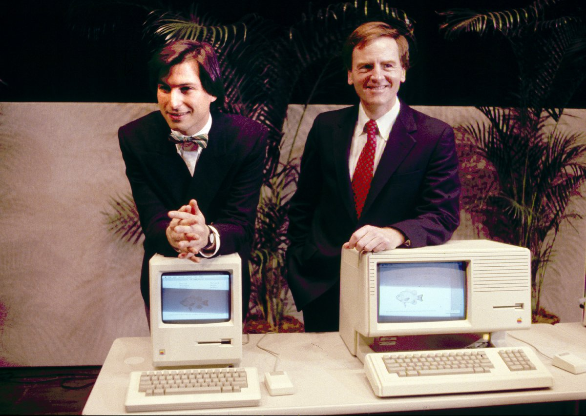
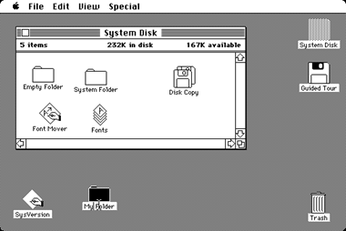

và những cống hiến của ông cho ngành Khoa Học Máy Tính
Máy tính Macintosh
 Hình 13: Steve Jobs bên máy tính Macintosh
Máy tính Macintosh đã được phát hành vào tháng Giêng năm 1984, với bộ nhớ 128K RAM . Nó nhanh chóng trở nên không đủ cho sử dụng, vì vậy tám tháng sau Apple phát hành một phiên bản cập nhật chính thức được gọi là "Fat Mac". Nó có bộ nhớ RAM 512K, nhiều gấp bốn lần.Trước khi máy Macintosh xuất hiện, tất cả các máy tính đã đều "dựa trên văn bản"- bạn vận hành chúng bằng cách gõ chữ lên bàn phím. Các Macintosh được chạy bằng cách kích hoạt hình ảnh (icon) trên màn hình với một thiết bị vận hành bằng tay nhỏ gọi là "con chuột". Hầu hết các máy tính hiện đại ngày nay hoạt động trên nguyên tắc này, bao gồm cả máy tính của Apple hiện đại và hầu hết những máy tính khác mà chạy hệ điều hành Microsoft Windows. Ngoại trừ Apple Lisa sản phẩm rất đắt tiền và không phổ biến của Apple được tung ra vào năm 1983, thì Macintosh được coi là máy tính thương mại thành công đầu tiên sử dụng một giao diện người dùng đồ họa (Graphical User Interface), như bên dưới.
 Hình 14: Hình ảnh dao diện màn hình máy tính Macintosh
Macintosh không có chỗ cho các tùy chọn mở rộng nội bộ - không có thẻ hoặc các thiết bị khác có thể được cài đặt, cũng không khả năng đồ họa có thể được nâng cấp. Trên thực tế, nó có các công cụ đặc biệt chỉ để có được các trường hợp mở. Và nhiều người còn cảm thấy màn hình 9 inch khá nhỏ và hạn chế. Tuy nhiên sự độc đáo của hệ điều hành giao diện của nó đã giúp macintosh đươch mọi người ưa chuộng hơn những sản phẫm máy tính khác.